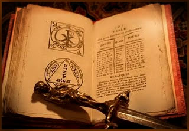
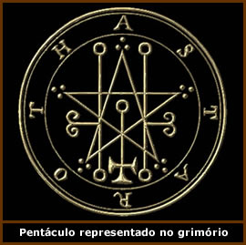

As Clavículas de
Salomão (do latim Clavis Salomonis)
também conhecido como As Chaves de Salomão
é um dos mais célebres e enigmáticos
livros de ocultismo da história. Ao mesmo tempo em
que é referência frequente em outros tantos
tratados e citado constantemente por vários ocultistas,
sua autoria, bem como sua legitimidade são discutíveis.
Origens
e conteúdo
A
origem do grimório é incerta e a autoria atribuída
ao bíblico Rei Salomão também é
pouco provável. Mas é possível que
tenha sido elaborado no século XII da era cristã
na região antiga do Império Bizantino (parte
da Europa, África e Ásia); apesar de ter ganhado
notoriedade apenas a partir do século XVII com o
Renascimento. Mesmo assim, há algumas versões
que surgiram no mesmo período e têm uma estrutura
bastante diferente entre si, tanto de conteúdo quanto
de linguagem. Fato que apenas amplia as lacunas sobre a
real procedência do original.
O conteúdo em aramaico
é baseado em antigas obras da Cabala e do judaísmo
pré-cristão; bem como da tradição
esotérica do período clássico. Assim,
de um modo geral, não difere de outros tantos grimórios
e traz descrições de cerimônias que
fazem uso de objetos ritualísticos confeccionados
pelo próprio praticante a fim de evocar demônios
que possam "trabalhar" a favor do magista.
O grimório traz ainda
um alfabeto mágico e uma extensa simbologia formada
por letras desse alfabeto associadas à arquétipos
ocultistas, como figuras geométricas, princípios
masculino e feminino da criação, ilustrações
antropomórficas etc.
Da mesma forma que outros
compêndios, As Clavículas de Salomão
tem uma linguagem rebuscada e rituais cerimoniais tão
complexos que são quase impraticáveis. Assim,
podemos entender que a obra foi propositalmente elaborada
dessa forma com o objetivo de impor ao pretenso mago uma
espécie de pré-avaliação; ou
seja, se o magista compreende as descrições
do livro, pode-se considerar que tem um nível de
conhecimento elevado e suficiente para utilizá-lo.
Caso contrário, o magista não consegue interpretá-lo
e acaba por desistir. Por outro lado, a linguagem e a complexidade
podem apenas representar o contexto no qual foi elaborado;
ou seja, por ocultistas medievais, escrito através
de uma conotação simbólica praticamente
incompreensível ao entendimento do homem moderno.
O
Legemeton
Há
também um manuscrito conhecido como Legemeton
ou A Chave Menor de Salomão que é
paralelo às Clavículas de Salomão.
Por vezes, o Legemeton é citado como um "capítulo"
das Clavículas; por outras, é uma obra à
parte.
De qualquer forma, este manuscrito,
que traz características históricas muito
próximas a das Clavículas de Salomão,
é uma obra muito influente no ocultismo ocidental.
Sua popularidade cresceu principalmente depois que Samuel
Mathers e Aleister
Crowley, no início do século XX,
elaboraram uma tradução da obra do idioma
original para o inglês moderno, intitulada The
Goetia: The Lesser Key of Solomon the King.
O Legemeton divide-se basicamente
em cinco partes: Ars Goetia, Ars Theurgia Goetia,
Ars Paulina, Ars Almadel e Ars Notoria.
Cada capítulo aborda um tema específico; porém,
não há necessariamente uma continuidade temática;
isto é, a ordem em que estão dispostas não
interfere na estrutura da obra, uma vez que são independentes
entre si.
O primeiro capítulo,
Ars Goetia, trata essencialmente da descrição
e de uma hierarquia atribuída à setenta e
dois demônios que teriam sido confinados pelo próprio
Salomão e aprisionados em um vaso de bronze selado
com símbolos mágicos.
Ars Theurgia Goetia
é o segundo capítulo do Legemeton e traz uma
descrição de trinta e um espíritos
do ar, que foram igualmente invocados e confinados por Salomão,
e também, instruções de como escravizar
a vontade desses espíritos e proteger-se de possíveis
ataques.
A terceira parte, intitulada
Ars Paulina (Arte de Paulo – em referência
ao apóstolo cristão que teria sido o mentor
dessas técnicas) aborda tanto a invocação
de Anjos, bem como, sua relação com o zodíaco,
astrologia e os quatro elementos.
Ars Almadel é
o quarto capítulo. Seu conteúdo é bastante
prático e orienta sobre a confecção
de talismãs, contendo descrições detalhadas
sobre cores e materiais utilizados; além de citar
conjurações e momentos astrológicos
mais favoráveis.
A quinta e última
parte é a Ars Notoria. A Arte Notável
é a revelação que Salomão recebeu
de Deus através de um anjo e traz, basicamente, orações
e instruções de como utilizar este recurso
de modo mais eficiente.
As Chaves
contemporâneas
Atualmente, há nas bibliotecas de
Londres e Paris, manuscritos medievais que seriam os exemplares
mais antigos que se tem registro de As Clavículas
de Salomão. No entanto, é possível
encontrá-lo em várias versões em livrarias
comuns e até mesmo pela Internet.
Deste modo, é evidente que encontrar
uma versão "legítima" ou que ao
menos se aproxime do original, não parece ser possível
nos dias de hoje. Até mesmo a aplicação
prática de um grimório como este parece inconcebível.
De qualquer forma, As Clavículas de Salomão,
é uma grande referência histórica da
busca humana pela sua espiritualidade.
Por
Spectrum